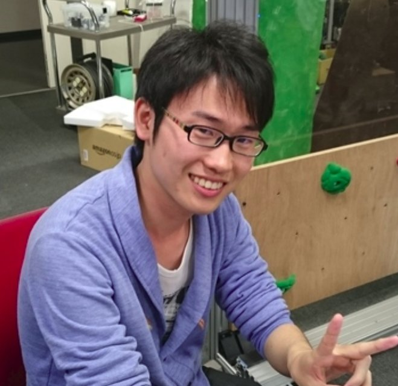

Kento Kawaharazuka
Ph.D. Student
Department of Mechano-Informatics,
Graduate School of Information Science and Technology,
The University of Tokyo, Tokyo, Japan
Google Scholar
GitHub
Gmail
Biography
Kento Kawaharazuka is a second year Ph.D. student in JSK Robotics Laboratory at the University of Tokyo.
His research interests are mainly in humanoids, including biomimetics, tendon-driven robots, and machine learning.
He designs tendon-driven humanoids and develops learning control systems to move them.
Interests
- Humanoid
- Biomimetics
- Machine Learning
- Tendon-driven
Education
- Ph.D. Student in Mechano-Informatics, 2019- (Graduate School of Information Science and Technology, The University of Tokyo)
- M.S. in Mechano-Informatics, 2017-2019 (Graduate School of Information Science and Technology, The University of Tokyo)
- B.S. in Mechano-Informatics, 2013-2017 (Faculty of Engineering, The University of Tokyo)
Laboratory
- JSK Robotics Laboratory (Prof. Masayuki Inaba), The University of Tokyo
Scholarship
- ACT-X, Japan Science and Technology Agency (JST), December (2020) - March (2023)
- Toyota-Dowango Scholarship for Training of Excellent Human Resources in Artificial Intelligence, April (2020) - March (2021)
- Overseas Challenge Program for Young Scientists, Japan Society for the Promotion of Science (JSPS), April (2020) – August (2020)
- Research Fellowship for Young Scientists DC1, Japan Society for the Promotion of Science (JSPS), April (2019) – March (2022)
- Toyota-Dowango Scholarship for Training of Excellent Human Resources in Artificial Intelligence, April (2018) - March (2019)
- Toyota-Dowango Scholarship for Training of Excellent Human Resources in Artificial Intelligence, April (2017) - March (2018)
Publications
Awards (Publication)
Awards and Experiences (Others)
- Part-time Enginner at Preferred Networks, October (2018) - March (2020)
- Internship at Preferred Networks, August - September, 2018
- Oral Presentation Award (Second Prize), Deep Learning Day 2018, 20, January, 2018
- Code Thanks Festival 2017, 2, December, 2017
- Jaxa Award (Second Prize), Moon Hack Hackathon 2017, 11 - 12, November, 2017
- Final Round of Code Festival 2016, 26 - 27, November, 2016
- 2nd RUNNER-UP and ABU ROBOCON AWARD, ABU Robot Contest 2016, Clean Energy Recharging the World, 21, August, 2016
- First Prize NHK Student Robot Contest 2016, Clean Energy Recharging the World, 10, July, 2016
- Outstanding Performance Award, Internship at Works Applications Co., Ltd. 4 - 31, March, 2016
- Internship at Future Standard Co., Ltd., January - April, 2016
- Third Prize (Senior Division), Tomato Robot Challenge, 18 - 20, December, 2015
- Final Round of CODE RUNNER 2015, 12, December, 2015
- Final Round of Code Festival 2015, 14 - 15, November, 2015
- Internship at HIOKI E.E. CORPORATION, 17 - 28, August, 2015
- Technical Award, NHK Student Robot Contest 2015, ROBOMINTON:BADMINTON ROBO GAME (Pit Member), 7, June, 2015
- Dowango Award (11/372), ICPC Domestic Preliminary Contest, 26, Jun, 2015
- Final Round of SamurAI Coding 2014-2015, 18, March, 2015
- Final Round of CODE RUNNER 2014, 30, November, 2014
- Technical Award, Freshman's Robot Contest 2013 (F^3RC), 29, September, 2013
CV
Download